I would like to express my deepest gratitude to my principal investigators, Dr. Clément Duhart, Dr. Xiao Xiao, and Dr. Marc Teyssier. A special thanks to Dr. Duhart for founding the DeVinci Innovation Center, where I had the privilege to study, and for guiding me as my PI. I am equally grateful to Dr. Xiao and Dr. Teyssier for stepping in and continuing to provide invaluable support and mentorship.
To my peers, Claudio Ortega and Matthieu Segui, with whom I navigated this journey at the DVIC, thank you for your companionship and teamwork. I would also like to extend my heartfelt thanks to my teachers, Dr. Gregor Jouet and Dr. Yliess Hati, for their guidance and wisdom throughout my studies.
I am especially thankful to the earlier generations of DVIC alumni, including Vincent Thevenin, Teddy Leclercq, Thomas Raynal, and Thomas Juldo, who have shared their knowledge and helped me grow. Your impact on my learning has been profound.
Lastly, I am forever grateful to my parents for their unwavering support and encouragement throughout this journey. Without them, none of this would have been possible.
In 2007, the launch of the iPhone revolutionized Human-Computer Interaction (HCI) by placing a powerful, multifunctional device directly in users’ pockets, transforming everyday interactions with technology. A cornerstone of this transformation was the iPhone’s virtual keyboard, which employed predictive text algorithms to enable fast and effective typing on a small screen. This innovation not only redefined how users interacted with mobile devices but also marked an early, impactful integration of algorithmic intelligence into consumer technology, enabling seamless usability in compact form factors.
Since then, AI has evolved significantly, driven by advancements in deep learning and the decreasing cost of computational resources. Today, HCI has moved beyond the small screen, extending into the physical world through augmented reality (AR). This shift from confined screens to broad, real-world interactions introduces a need to explore and define the new paradigms that AI brings to HCI. By bridging virtual interfaces with physical spaces, modern AI-driven HCI tools like AR challenge and expand traditional interaction models, necessitating a deeper understanding of how these technologies assist users in increasingly intelligent environments.
This thesis explores the affordances introduced by AI-driven augmented reality applications within Human-Computer Interaction. The integration of AI into HCI introduces new affordances, enabling seamless, dynamic, and collaborative interactions that shift traditional paradigms. These affordances fall within the concept of low-signaling but high-possibility interfaces, where minimal user input can yield expansive, contextually rich experiences. This shift empowers users to accomplish more while interacting less, marking a distinct move toward efficiency and intuitiveness in digital interaction.
A key component of this research is exploring AR experiences that do not solely depend on dedicated AR hardware like headsets or advanced glasses. Instead, we emphasize creating applications that extend beyond the screen, leveraging platforms designed to integrate with, rather than replace, the user’s physical environment. This approach fosters inclusivity, allowing third-party participants to engage with the experience in ways that would otherwise remain invisible or inaccessible. By tapping into these affordances, AI-enabled AR applications can facilitate shared, immersive experiences that blend seamlessly with real-world settings, offering an expanded and intuitive interaction model that aligns with the natural behavior of users and third-party participants alike.
In this way, AI-driven AR not only enhances individual interactions but also redefines the landscape of collaborative engagement, positioning technology as a flexible extension of the physical world rather than a separate or isolated entity. This paper seeks to establish a comprehensive understanding of these affordances, their applications, and their impact on the future of HCI, highlighting the potential of AI in facilitating interactions that go beyond traditional screen-based boundaries.
Current AR interfaces in HCI lack the adaptability for seamless, collaborative interactions with AI, often requiring constrained user interaction and specialized hardware. This thesis aims to develop dynamic AR interfaces that enable users to intuitively collaborate with AI, accomplishing complex tasks with minimal input.
To deepen our understanding of AI-enabled affordances in augmented reality, this research investigates the following questions:
What challenges are associated with designing for low-signaling, high-possibility affordances?
How can a user collaborate with an AI system?
How do AI-driven affordances differ from traditional affordances?
In response to the above questions, this research sets forth the following objectives:
To build systems that enable users to collaborate with AI to accomplish complex creative tasks.
To analyze how AI can foster more intuitive and expressive interactions within HCI.
To explore real-time dynamic AI applications.
The Totem platform and the LLM Whiteboard form the core of this research, each project explores facets of AI-enabled affordances in augmented reality. These projects illustrate how AI and AR can combine to create dynamic, collaborative experiences that embody low-signaling, high-possibility interfaces.
The Totem platform investigates the integration of AI with AR in digital art creation. Using SDXL Turbo, a state-of-the-art diffusion model, the platform generates intricate portraits, while the First Order Motion model animates these creations, allowing users to manipulate digital art with movements in real time. This project embodies the thesis’s objective to foster intuitive and expressive HCI interactions by providing a highly interactive art creation experience. The Totem enables users to explore digital art beyond the traditional screen, as their physical movements directly influence the generated images. The result is a seamless, embodied creative process that exemplifies how AI-driven affordances enable users to accomplish more with fewer actions.
The LLM Whiteboard project facilitates user collaboration with a large language model in a live programming environment. Designed to expand the understanding of physical computing concepts through AR, this project allows users to interact with a spatially aware LLM. Using camera feeds to capture the physical environment, models interpret data while the LLM generates code based on high-level user commands. The Whiteboard environment functions either as a blank canvas or as an overlay on a live camera feed, which enables users to experiment with physical computing concepts in a virtual space. This project aligns with the research objective of exploring collaborative AI applications, demonstrating how AI-driven affordances can enable creative coding processes with minimal signaling and high interpretive potential.
By blending AI with AR in the Totem platform, users gain a new level of creative agency, generating and interacting with digital art through intuitive gestures. This interactive experience highlights how AI can redefine affordances, empowering users to accomplish complex tasks with minimal effort and establishing a pathway for applications in digital art, entertainment, and education. The insights drawn from the Totem platform reveal how AI can translate human movement into digital influence, making it a compelling case study for integrating physical interactions with real-time generative art.
Similarly, the LLM Whiteboard showcases the possibilities of collaborative coding and physical computing within an AR framework. By leveraging AI’s capacity to interpret spatial data and generate actionable code, this project highlights how users can interact with a digital environment as if it were an extension of their physical space. The Whiteboard provides a pathway for AI to enable complex, multi-modal tasks that would otherwise require extensive training or setup, illustrating its potential in educational settings, prototyping, and digital fabrication.
Together, these projects underscore the transformative potential of AI-enabled AR in enhancing user engagement and productivity across various applications. They suggest a future where AR platforms move beyond traditional screens, creating environments that blend seamlessly with the physical world. As models of high-possibility, low-signaling interfaces, Totem and the LLM Whiteboard serve as starting points for broader applications that empower users to intuitively and expressively collaborate with AI systems.
In Human-Computer Interaction, the term "affordance" is essential for understanding how users engage with interfaces, serving as a bridge between User Interface (UI) design and User Experience (UX). Affordances refer to the properties or characteristics of an object (or digital element) that suggest its possible uses, guiding users toward intended actions within an interface.
The concept originated with Gibson (1977) (Gibson 1977) , who introduced affordances in the context of ecological psychology. For Gibson, affordances are action possibilities inherent in an environment that exist regardless of whether an actor perceives them. For example, a chair affords sitting regardless of whether someone realizes it or uses it for that purpose. This perspective highlights that affordances are rooted in the functional capabilities of an environment or object.
Building upon Gibson’s foundational work, Norman (1988) (Norman 1988) adapted the concept to HCI, emphasizing how affordances in interfaces provide cues about possible interactions. Norman expanded the idea to focus on perceived affordances, explaining that objects or interface elements should offer visual hints that communicate how they can be used. For instance, a button’s design may indicate that it is clickable, through shading, placement, or other visual markers, signaling users toward the appropriate interaction without explicit instructions. Norman’s interpretation underscores the role of perception in usability: an affordance is effective in HCI when it is both present and easily recognizable.
This refinement of affordances into perceived cues is integral to user experience design, as it shapes how easily and intuitively users navigate an interface. Clear affordances reduce cognitive load, allowing users to engage with minimal friction, leading to a seamless, satisfying UX. By leveraging users’ existing mental models, affordances can guide interactions effectively. For instance, a trash can icon is widely recognized as affording deletion—a shared metaphor that aids usability.
[fig:affordances]
Affordances in HCI enhance both functionality and understandability, forming a bridge between the UI elements users interact with and the UX that shapes their experience. The more intuitive and apparent these affordances, the more effortlessly users can navigate and feel in control of the interface, optimizing overall interaction.
In the previous section, we explored the concept of affordances as a fundamental link between User Interface (UI) and User Experience (UX). Affordances guide users through an interface by providing signals about the possibilities an action can unlock (McGrenere and Ho 2000) (Przepiorka and Horne 2018) . When these affordances are clear, users can intuitively understand what actions are possible. However, as digital interfaces evolve, particularly in the realms of augmented reality (AR) and artificial intelligence (AI), we encounter new types of interfaces where affordances are less explicit. These low-signaling, high-possibility systems challenge traditional UI and UX paradigms, introducing new complexities in how users navigate and interact with the possibilities afforded by these systems.
Low-signaling, high-possibility interfaces are designed with minimal explicit cues, offering limited guidance on potential interactions while enabling a broad scope of possible outcomes. These interfaces challenge traditional human-computer interaction frameworks, as they minimize explicit affordances, making it difficult for users to grasp the system’s full functionality. This limited signaling can create a perceptual gap, wherein the extensive potential of the interface may not align with the user’s ability to easily interpret or interact with it, creating friction in usability and discovery processes.
In this context, the affordances competition hypothesis (Cisek and Kalaska 2010) , offers insights into understanding how users navigate such interfaces. According to this hypothesis, interactive behaviors rely on simultaneous processes in which potential actions are specified and selected in real-time rather than in serial stages. This framework contrasts with traditional cognitive models, suggesting that users may not process low-signaling interfaces through linear steps but instead perceive and select actions dynamically, aligning more closely with real-time interactive systems that emphasize immediacy and fluidity in human-computer interactions. Thus, low-signaling interfaces may require users to engage in this kind of affordance competition, evaluating and selecting options in parallel rather than relying on pre-defined instructions.
Moreover, research on HCI design principles underscores the importance of aligning system functionality with users’ mental models to enhance overall usability and satisfaction (R et al. 2023) . Interactive systems that complement human cognitive processes and intuitively support the user’s decision-making foster a more accessible and fulfilling experience. In low-signaling interfaces, however, this alignment becomes challenging due to the minimal cues provided, emphasizing the need for adaptive and responsive design elements that aid users in discovering the high-possibility actions available. Consequently, achieving a balanced design in these interfaces requires understanding human cognition and designing responsive elements that can subtly guide user interaction without overwhelming or reducing the interface’s inherent flexibility.
To effectively design for both usability and richness in interaction, it’s important to understand the balance between signaling levels and possibility levels:
High Signaling, Low Possibility: These interfaces are straightforward and easy to use, offering clear affordances for a limited range of actions. For instance, a simple media player might feature a play/pause button, volume controls, and a slider for adjusting the timeline—each with an obvious function.
Low Signaling, High Possibility: These interfaces, by contrast, are complex, offering numerous interaction possibilities, but with minimal guidance or affordances. Voice command systems or gesture-based interfaces often fall into this category, where the user must experiment or learn to discover the breadth of possible interactions.
In many cases, increasing signaling—through visual or other sensory affordances—enhances the user’s ability to explore the full potential of a system. However, increasing signaling can clutter the user’s experience and overwhelm the interface, limiting the immersion and fluidity.
Augmented Reality (AR) exemplifies the unique challenges of designing low-signaling, high-possibility interfaces (Fragoso, Rebs, and Barth 2012) . In AR, users can interact with digital elements seamlessly integrated into their physical surroundings, creating opportunities to blend the virtual and real. However, signaling these interactions can be difficult, as too many visual cues may diminish the immersive experience, disrupting the cohesion between digital overlays and physical space.
An AR interface may offer rich interaction possibilities, such as manipulating virtual objects, triggering animations, or accessing information through gestures, voice commands, or interactions with physical items. However, without intuitive affordances—like context-aware hints, subtle animations, or gestures that intuitively link to real-world actions—users may struggle to understand the interface’s potential. The vast range of interactions that AR enables is thus limited by how effectively these options are communicated.
Furthermore, AR introduces a unique third-person challenge: a person without AR gear cannot readily interpret the interactions between AR users and digital elements, leading to an exclusionary effect in shared physical spaces. This highlights the need for AR interfaces to create inclusivity by making interactions more accessible and understandable even to those without AR devices. Integrating AR elements into the physical environment through clear, minimalistic cues—such as small indicators or interactive physical anchors—can help bridge this gap, allowing both AR-equipped and non-equipped participants to follow the interaction flow.
To achieve intuitiveness and fluidity, AR interfaces should minimize the learning curve and reduce the need for elaborate tutorials. The goal is to make interactions so intuitive that users can understand and engage with AR environments effortlessly, enhancing both user experience and accessibility. Ultimately, the goal of AR interfaces should be to achieve intuitiveness and fluidity, reducing the need for a steep learning curve or extensive tutorials. Effective AR affordances should allow users to explore and engage with the environment naturally, discovering interactions as they would in the physical world. By prioritizing intuitive, fluid interactions, AR interfaces can empower users to fully leverage the technology’s potential with minimal guidance, enhancing both usability and user experience.
Artificial Intelligence serves as a crucial enabler for low-signaling, high-possibility interfaces (Neches et al. 1986) . By interpreting user intent and providing contextual cues, AI enhances intuitive interaction in environments where explicit visual affordances are limited (Beltrão, Paramonova, and Sousa 2022) . Through real-time analysis of user behavior and context, AI-driven systems can offer subtle, adaptive guidance, creating an experience that feels natural and minimally intrusive.
For instance, in low-signaling interfaces such as voice assistants, AI interprets natural language inputs, eliminating the need for traditional visual cues. This approach simplifies interactions, allowing users to engage seamlessly without explicit prompts. Similarly, in Augmented Reality environments, AI can track a user’s gaze, gestures, or position in real-time, delivering just-in-time affordances that guide the user without disrupting immersion. By responding dynamically to user actions, AI transforms the interface into a fluid, context-sensitive experience, enabling users to explore the system’s capabilities without facing a steep learning curve or being overwhelmed by signals.
AI also addresses the "high-possibility" aspect of these interfaces by unlocking functionalities that would otherwise be inaccessible. Generative AI, for example, facilitates complex tasks like on-the-fly image creation, code generation, or data synthesis, all of which expand the potential actions available within an interface. In creative tools, this enables users to generate images, design interactive elements, or even produce code using simple, high-level commands. Through capabilities like generative AI, systems gain a wide range of possible interactions without requiring a corresponding increase in explicit controls, allowing users to accomplish complex tasks with minimal input.
The convergence of Artificial Intelligence and Augmented Reality creates a powerful synergy that addresses the inherent challenges of low-signaling, high-possibility interfaces in AR environments. While AR offers a high degree of interaction potential by blending digital elements with physical surroundings, it is often limited by the difficulty of signaling these possibilities in an intuitive, immersive manner. AI, on the other hand, enables adaptive affordances, capable of interpreting user intent and dynamically generating cues, effectively bridging this gap.
In AR, the complexity of potential interactions—such as manipulating virtual objects, accessing hidden layers of information, or collaborating with others—is constrained by the system’s ability to guide users effectively without overwhelming visual indicators. Here, AI proves invaluable. By analyzing gestures, gaze, and contextual factors in real time, AI can offer subtle prompts, adjust visual affordances, or predict actions, thus empowering users to explore and interact with AR content fluidly. For example, if a user’s gaze lingers on a virtual object, AI could provide a discreet visual cue, indicating that the object is interactive, without detracting from the overall immersive experience.
Moreover, AI’s generative capabilities elevate AR to a new level of high-possibility interaction. Generative AI models can dynamically create content such as images, textures, or even functional code within the AR environment, broadening the scope of what users can accomplish. This expands AR from a static interface to an evolving, interactive canvas where users are limited only by their imagination rather than interface constraints. By enabling such high-possibility functionalities, AI transforms AR from a fixed display of virtual elements to a responsive, co-creative environment.
Together, AI and AR cultivate a low-signaling, high-possibility interface that enhances user experience through intuitiveness and adaptability. AI alleviates the signaling limitations of AR by dynamically responding to user intent, while AR provides a tangible canvas for AI-driven possibilities, blending digital and physical realms. This symbiotic relationship ultimately fosters an accessible, immersive environment, where users can interact freely and creatively, with minimal guidance and maximal opportunity.
Tracking user movements in AR is challenging due to the need for real-time accuracy, low latency, and efficient processing on mobile devices. These requirements are complicated by factors like variable lighting, fast motions, and limited device resources, all of which demand highly optimized algorithms and adaptive processing to deliver smooth, immersive interactions.
[fig:kptracking]
MediaPipe (Lugaresi et al. 2019) is a powerful framework for enabling high-fidelity body pose estimation on edge devices. This framework uses a pipeline to detect and track human poses in real time, which has expanded the possibilities for AR applications by allowing overlay interactions that are responsive, intuitive, and suitable for everyday mobile devices. MediaPipe’s flexibility allows it to run on mobile devices, desktops, and even in web environments, ensuring accessibility for diverse applications such as fitness tracking, dance, sign language recognition, and full-body gesture control.
[fig:mediapipe]
In AR applications, MediaPipe Pose facilitates the seamless integration of digital content with physical movements. With its ability to infer 33 3D landmarks and a background segmentation mask in real time, MediaPipe provides accurate body pose tracking that supports real-world overlays. This makes it an ideal solution for applications that require responsiveness and precision, such as interactive exercise tutorials, real-time motion-based games, or immersive social experiences through virtual avatars. By delivering such features on lightweight devices, MediaPipe enables more inclusive and accessible AR solutions, broadening AR’s reach into consumer-ready devices like smartphones and AR glasses.
While frameworks like OpenPose (Cao et al. 2017) have demonstrated high accuracy in pose tracking, they often depend on powerful desktop environments for processing. MediaPipe’s edge lies in its ability to deliver real-time pose estimation on mobile and web platforms, specifically optimized to maintain high performance on devices with limited computational resources.
MediaPipe Pose, powered by BlazePose (Bazarevsky 2020) , adopts a two-step detector-tracker ML pipeline. The detector identifies the person or pose’s region of interest (ROI) within the frame, while the tracker predicts pose landmarks and segmentation within this ROI. This approach minimizes computational load by selectively activating the detector only for the first frame or when the tracker loses sight of the pose, ensuring that subsequent frames can rely on the previously identified ROI. This contrasts with frameworks like AlphaPose and Apple Vision, which typically employ continuous processing, potentially consuming more resources and leading to latency issues on mobile devices.
[fig:arFrameworks]
Moreover, MediaPipe’s holistic pipeline allows it to integrate multiple tasks—pose, face, and hand tracking—into one efficient graph, which is a significant differentiator from solutions requiring individual modules for each task. Benchmarks also demonstrate that MediaPipe’s models, like BlazePose GHUM Lite, can achieve 20ms latency on mobile devices, outperforming heavier models such as BlazePose GHUM Heavy and comparable alternatives from Apple Vision. This efficiency not only allows real-time tracking across various AR contexts but also opens new possibilities for developing lightweight, scalable AR applications that can run smoothly even on lower-end devices.
MediaPipe Holistic is a comprehensive framework that differentiates itself from standalone models like BlazePose by integrating pose, face, and hand tracking into a unified system. This holistic approach offers a unique advantage for AR applications requiring real-time, multi-modal tracking across these three key body regions. By tracking multiple modalities within a single framework, MediaPipe Holistic enables immersive and cohesive AR experiences, allowing interactions that rely on the synchronous tracking of head, hands, and body positions—essential for applications like gesture-based controls, sign language recognition, fitness analysis, and interactive AR effects.
To achieve this integration, MediaPipe Holistic relies on distinct models tailored to each tracking component (pose, face, and hands), optimized for high performance and low latency. Each component operates independently but is semantically aligned through a multi-stage pipeline, which leverages the strength of each model while ensuring the output remains consistent across all regions. This pipeline begins by estimating the user’s full-body pose with BlazePose’s pose detector. It then identifies regions of interest for each hand and the face, recropping the full-resolution input frame to improve accuracy before applying task-specific face and hand models. The result is a cohesive set of 543 landmarks: 33 for the body, 468 for the face, and 21 for each hand, creating an accurate, detailed, and continuous tracking solution for AR applications.
[fig:holisticArchitecture]
MediaPipe achieves exceptional performance on edge devices through a series of targeted optimizations, allowing it to deliver accurate, real-time tracking with minimal computational load. These optimizations are critical for enabling MediaPipe to perform smoothly on mobile devices, making it ideal for AR applications that demand low latency and responsiveness.
Graph-Based Pipeline for Efficient Processing: At the core of MediaPipe’s efficiency is its graph-based pipeline, a modular structure where each computational task, such as pose detection or face tracking, functions as an independent node within a directed graph. This setup allows tasks to run only when needed, reducing redundant computations and streamlining data flow through the pipeline. The graph-based design also enables parallel processing by assigning distinct tasks to separate CPU or GPU cores, maximizing hardware utilization. By leveraging this modular approach, MediaPipe efficiently manages real-time data flow, reducing latency and enhancing the responsiveness of AR interactions.
Lightweight and Quantized Model Architecture: To balance accuracy and computational efficiency, MediaPipe’s models are carefully designed to reduce floating-point operations (FLOPs) and minimize parameter count. This lightweight architecture enables MediaPipe to perform complex inference tasks effectively even on resource-limited devices. Further optimization is achieved through quantization, converting 32-bit floating-point weights to 8-bit integers, which substantially reduces memory usage and accelerates processing times without compromising accuracy. This combination of a lightweight design and quantization enables MediaPipe to deliver real-time performance on mobile devices.
Adaptive Inference with Frame Skipping: MediaPipe’s adaptive inference and frame-skipping techniques are essential for managing processing power effectively. By dynamically reducing processing for frames with minimal movement, MediaPipe optimizes resource usage, reducing battery drain while maintaining high responsiveness. In high-motion scenarios, the system seamlessly adjusts by resuming full-frame inference to ensure consistent performance. This flexibility allows MediaPipe to conserve resources during low-demand periods while maintaining the responsiveness needed for interactive AR applications.
Integrated Parallel Processing: MediaPipe takes advantage of the multicore architecture in modern mobile devices, enabling simultaneous processing across pose, hand, and face tracking components. By distributing these tasks across available CPU or GPU cores, MediaPipe achieves real-time, synchronized multi-modal tracking without overloading the device’s resources. This parallel processing capability is particularly valuable in AR applications where coordinated tracking of multiple regions—such as body, face, and hands—enables smooth, uninterrupted user interactions.
MediaPipe stands as a pioneering framework for delivering real-time, high-fidelity tracking across multiple modalities on edge devices, making it an ideal solution for AR applications. Through a combination of modular graph-based architecture, adaptive inference techniques, and carefully optimized model designs, MediaPipe achieves a balance of accuracy and efficiency that enables it to run seamlessly even on resource-constrained devices.
The framework’s flexibility, from lightweight and quantized models to advanced data flow control and parallel processing capabilities, showcases its adaptability across a range of devices—from mobile phones to AR glasses. MediaPipe’s holistic approach, which integrates body, face, and hand tracking within a unified system, opens the door to immersive, interactive experiences that push the boundaries of what’s possible on mobile platforms. This adaptability not only supports a wide range of AR applications, such as fitness tracking, gesture-based controls, and social augmented reality, but also paves the way for future advancements in edge-based computing and user interaction.
Natural Language Processing (NLP) has undergone a remarkable evolution in the field of machine learning, from early techniques like N-grams (Markov 1913) to the advent of modern large language models (LLMs). Each milestone in this progression reflects the increasing complexity of language understanding and the growing sophistication of computational models designed to process human language. Today, LLMs are not just powerful language processors; they have become semantic operators, revolutionizing how we interpret and interact with language. This section explores the evolution of NLP, highlights the rise of LLMs as semantic operators, and explains how these models are reshaping Human-Computer Interaction (HCI) by enabling interfaces with low affordance through low signaling and high possibility.
In the early stages of NLP, statistical models like N-grams were used to predict the likelihood of word sequences. N-grams are based on the probability of a word occurring, given the previous N-1 words. For example, a bigram model predicts a word based on the one preceding it, while a trigram model uses the two preceding words. Though simple, N-grams were effective in tasks like speech recognition and text generation, offering a basic way to model language by counting word occurrences and calculating probabilities.
However, these models had significant limitations, especially when it came to understanding the broader context of language. N-grams could only account for short-range dependencies and often struggled with ambiguity or meaning, as they were purely statistical and lacked deeper semantic understanding. The reliance on limited context meant that these models could not effectively grasp the nuances of human language, prompting the development of more advanced techniques.
The next significant leap in NLP came with the introduction of neural networks and word embeddings, particularly through models like Word2Vec (Rong 2014) and GloVe (Pennington, Socher, and Manning 2014) . Word embeddings transformed how machines interpreted language by mapping words to dense vectors that captured semantic relationships. This allowed words with similar meanings to have similar vector representations, enabling models to understand relationships like "king" is to "queen" as "man" is to "woman."
[fig:embeddings]
These embeddings, while a major step forward, still struggled with polysemy (words having multiple meanings) and couldn’t handle long-range dependencies well. The need for a model that could understand context over entire sentences or paragraphs led to the development of recurrent neural networks (RNNs) (Rumelhart, Hinton, and Williams 1986) and long short-term memory (LSTM) (Hochreiter 1997) networks, which improved the ability to capture sequential dependencies in language.
The breakthrough that brought NLP into the modern era was the development of the Transformer architecture, first introduced in the "Attention is All You Need" paper by Vaswani et al. in 2017 (Vaswani 2017) . Unlike RNNs, Transformers rely entirely on a self-attention mechanism, allowing the model to focus on different parts of a sentence simultaneously, regardless of their position. This enabled better handling of long-range dependencies and opened the door for scaling NLP models to unprecedented levels.
[fig:transformer]
Building on the Transformer architecture, large language models (LLMs) like GPT (Generative Pre-trained Transformer) (Radford 2018) and BERT (Bidirectional Encoder Representations from Transformers) (Devlin 2018) revolutionized NLP. LLMs trained on vast corpora of text have demonstrated the ability to perform tasks such as text generation, translation, summarization, and even answering complex questions. These models don’t just analyze words—they understand context, intent, and meaning on a deep level, making them far more adept at processing human language.
The rise of Large Language Models (LLMs) marks a significant shift in accessibility and democratization of deep learning technologies. Historically, large deep learning models required extensive computational resources and were primarily accessible to those with the expertise to manage complex architectures. However, the introduction of pay-as-you-go APIs like ChatGPT and Claude, alongside open-source platforms like Hugging Face, has drastically lowered the barriers to entry. These services enable developers to access and integrate powerful LLMs without the need for specialized infrastructure or deep expertise. Now, even a simple microcontroller or edge device can leverage web APIs to tap into cutting-edge NLP capabilities, significantly reducing both development and maintenance costs. This democratization has expanded the use of deep learning technologies, making them accessible to a broader audience across industries and enabling more innovation in human-computer interaction.
One of the most powerful aspects of modern LLMs is their function as semantic operators. In computing, we are familiar with mathematical and logical operators, which are hardware-friendly and easily implemented. However, semantic operators, which deal with meaning and interpretation, were traditionally reserved for the human domain. With LLMs, machines can now function as semantic operators, interpreting, manipulating, and generating language in ways that reflect deeper understanding.
For example, when presented with the sentence "The cat sat on the mat," a mathematical model would simply process the syntax. However, an LLM can infer more—understanding that "cat" is an animal, "sat" refers to the action of sitting, and "mat" is a surface. More complex interpretations, like summarizing a paragraph or making inferences based on context, were historically exclusive to human cognition but are now within the domain of LLMs.
The ability of LLMs to act as semantic operators enables machines to comprehend and engage with the subtleties of language, making them invaluable for natural language tasks in HCI. They allow systems to interact more naturally with users by understanding the meaning behind queries, interpreting ambiguous input, and even generating responses that align with human expectations.
In Human-Computer Interaction, semantic operators such as large language models are transforming how users interact with complex systems, especially within the framework of low-signaling, high-possibility affordances. As semantic operators, LLMs excel at interpreting context, predicting user intent, and generating responses that align with the user’s high-level goals, even when the interface offers few visual signals. The ability to support rich interaction with low signaling creates a flexible, high-possibility interface that aligns closely with natural human communication patterns.
This interpretative power is particularly valuable in emerging technologies like augmented reality and AI-driven interfaces, where explicit affordances may be limited by the nature of the physical-digital blend. In these contexts, LLMs serve as the underlying layer that interprets user commands, allowing interaction through natural language or gestures without relying on predefined commands or extensive visual guidance.
The progression of natural language processing, from early N-gram models to advanced large language models, has fundamentally reshaped human-computer interaction by enabling machines to interpret, adapt, and respond to nuanced human language. In particular, LLMs, with their capacity to act as semantic operators, have proven essential in creating low-signaling, high-possibility interfaces—interfaces that minimize visual affordances while maximizing the range of potential actions and outcomes available to the user. This dynamic is especially effective in augmented reality, where LLM-driven interfaces empower users to interact intuitively through high-level instructions rather than explicit, screen-bound cues.
For example, in an AR environment, a user might simply ask, "Show me the nearest restaurant," and the system, guided by an LLM, can accurately interpret the intent and context to provide relevant, actionable information without the need for extensive visual prompts. This illustrates how LLMs seamlessly bridge the gap between low-signaling and high-possibility interfaces, making complex systems more accessible and natural to use. As LLMs continue to advance, their impact on human-computer interaction will deepen, unlocking more seamless, intelligent, and context-aware interactions that align with human intent and extend the capabilities of natural language interfaces.
As seen previously, the evolution and convergence of key concepts—affordances, low-signaling, high-possibility interfaces, AI, and AR—within Human-Computer Interaction (HCI). As this field advances, affordances continue to play a crucial role in enabling users to engage intuitively with interfaces, balancing clear cues with opportunities for exploration. However, as systems like AR and AI evolve, traditional affordance models are challenged, necessitating new paradigms that account for high potential actions with minimal explicit guidance.
This shift is particularly evident in low-signaling, high-possibility interfaces, where users are empowered to engage more freely yet may encounter obstacles due to limited cues. Here, AI emerges as a critical enabler, offering adaptive affordances that support dynamic user interactions. Through technologies like MediaPipe and LLMs, AI provides real-time context awareness and guidance, supporting naturalistic interaction by responding subtly to user intent and behavior. This synergy enhances immersive technologies such as AR, creating interfaces that feel less like static tools and more like fluid extensions of the user’s environment.
The intersection of AI and AR reveals the potential for high-possibility interaction models, where user commands, gestures, or contextual cues shape experiences without the clutter of excessive signaling. By analyzing user inputs and behaviors, these technologies enable a smooth, intuitive interface that feels increasingly natural and accessible, ultimately facilitating a seamless blend between the physical and digital realms. This exploration of contemporary technologies in HCI underscores the transition from traditional affordances to dynamic, AI-driven interactions, positioning these advancements as foundational for the future of interactive and immersive systems.
These insights illuminate a new era in HCI, where technological progress not only broadens the scope of human-computer interaction but also challenges designers to innovate new affordances that cater to a digitally integrated world. The journey from foundational affordances to adaptive, AI-enabled interfaces exemplifies a shift towards systems that empower users with unprecedented levels of interaction potential, ultimately expanding the possibilities of how we communicate and create within digital spaces.
[fig:spiritofTotem]
The Totem platform stands at the forefront of combining Artificial Intelligence (AI) and Augmented Reality (AR) to offer a unique and innovative way of creating digital art. This platform integrates two cutting-edge technologies, SDXL Turbo (Sauer et al. 2023) and the First Order Motion model (Siarohin et al. 2019) , to transform basic sketches into interactive AR experiences. The Backbones of the Totem platform is GOSAI (Thomas Juldo 2022) , an AR framework that propels Augmented Reality applications to new heights.
It starts with a user’s simple drawing. Using SDXL Turbo, a powerful diffusion model developed by Stability AI, these drawings are quickly turned into detailed AI-generated images. This step elevates the initial sketch beyond its original form, providing a new level of artistic detail and creativity. The process doesn’t stop there. The Totem platform then employs the First Order Motion model to bring these images to life. This model adds realistic movements and expressions to the AI-generated art, creating characters that can move and interact within an AR setting. This step is crucial in making the art not just more engaging but also more immersive. The Totem platform is more than just a tool; it’s a glimpse into a new way for creators to interact with their art and for audiences to experience stories in a more engaging manner.
[fig:totemImage]
The AI Totem project is an exploration of how Artificial Intelligence (AI) fits into the creative side of Human-Computer Interaction (HCI). By combining AI with Augmented Reality (AR), the platform offers a new way to create and experience digital art. Through advanced AI models such as SDXL Turbo and the First Order Motion deepfake model, the Totem platform turns basic sketches into interactive AR experiences. Built on the GOSAI AR framework, this system enables artists and developers to explore creative technology in ways that were previously difficult to achieve.
The creative process in the AI Totem platform begins with a simple hand-drawn sketch. Traditionally, a sketch might be used as a rough guide for more detailed artwork, but here it serves as the starting point for something more complex. SDXL Turbo, a diffusion model created by Stability AI, processes the sketch and transforms it into a fully detailed AI-generated image. This model excels at quickly generating high-quality, realistic images from basic inputs, elevating the initial drawing to something far more detailed and visually engaging.
But the platform doesn’t stop at creating static images. Once the AI-generated image is complete, the First Order Motion model is used to animate it. This deepfake model brings the image to life by adding movement and expressions. The result is an animated character that can be placed into an AR environment, interacting with the space and the user. This adds a new layer of immersion, making the art not only visually interesting but also dynamic and interactive.
Augmented Reality (AR) plays a crucial role in the AI Totem platform, allowing users to engage with their creations in new ways. AR bridges the gap between the digital and physical worlds, letting users place their AI-generated characters into real-world environments. Unlike traditional art forms where interaction is limited, AR opens up possibilities for creators to develop work that is interactive and immersive.
One of the challenges in AR is how to balance complexity and usability. The AI Totem addresses this by integrating AI to handle much of the heavy lifting—interpreting sketches, generating images, and animating them—so that the user can focus on the creative aspects. AR within the Totem platform doesn’t overwhelm users with visual clutter, but instead provides an interface where the interaction is more intuitive, allowing creators to manipulate characters directly with natural gestures or simple controls.
AI in the Totem platform serves as a tool that enhances the creative process. Traditionally, creating highly detailed artwork or animated characters required significant time and technical expertise. However, with AI models like SDXL Turbo and First Order Motion, these tasks can be automated or significantly streamlined. This frees creators to focus on the creative aspects of their work, rather than the technical details of execution.
In the Totem platform, AI functions as a type of semantic operator—interpreting and generating visual elements based on the input it receives. Just as we discussed in earlier chapters about the role of AI in language processing, the Totem uses AI to understand the intent behind a creator’s sketch and transform it into something more detailed and complex. This approach simplifies the interaction process, allowing users to achieve complex results with minimal input.
The combination of AI and AR in the Totem platform also opens new possibilities for interactive storytelling. Characters created through this platform are not static—they can be animated, interact with real-world environments, and respond to user actions. This allows for a more engaging and personalized experience for both creators and audiences.
For example, a creator can design a character that reacts to gestures or interacts with other virtual objects in an AR space. This makes the storytelling experience dynamic, with the narrative evolving based on user interactions. The AI Totem is a tool not just for generating art but for creating stories and experiences that feel immersive and responsive.
The AI Totem project highlights how AI and AR can be combined to push the boundaries of creativity in HCI. By using AI models like SDXL Turbo and First Order Motion, the platform allows users to transform simple sketches into detailed, animated characters that come to life in AR environments. With the GOSAI AR framework supporting this process, the platform enables creators to explore new ways of expressing ideas, telling stories, and engaging with digital art. In doing so, AI Totem demonstrates how AI-driven tools can make complex creative tasks more accessible, helping to bridge the gap between technical challenges and artistic expression in the evolving field of HCI.
The AI Totem platform combines advanced AI models and Augmented Reality (AR) technologies to transform simple sketches into interactive digital art. The implementation of this platform requires integrating multiple technologies, including the GOSAI framework for AR, First Order Motion for animating characters with deepfake technology, and SDXL Turbo for fast image generation. This chapter will break down each key component and explain how they come together to power the AI Totem platform.
At the heart of the AI Totem platform is GOSAI, an open-source framework that simplifies the development of AR applications. GOSAI enables developers to create AR experiences that seamlessly blend the physical and digital worlds, using an architecture that runs on a variety of devices, from desktops to mobile phones.
GOSAI operates using a kernel space and user space architecture, with drivers in the kernel space handling hardware and computation tasks, and the user space managing the interface and user interactions. Written in Python and JavaScript, the framework allows developers to integrate AR functionalities such as pose estimation, image recognition, and interaction tracking. GOSAI is designed to be modular, making it easy to plug in various components, including the AI models used in the Totem platform.
By handling key aspects of AR development, such as camera data processing, pose estimation, and real-time rendering, GOSAI provides a foundation that allows the AI Totem platform to offer interactive and immersive AR experiences. This framework is responsible for tracking the user’s interactions with the generated art, managing the display of the AI-enhanced images, and providing smooth transitions between the physical and digital environments.
The Totem platform integrates deepfake technology to animate the AI-generated images and make them interactive. While traditional deepfake approaches often use Generative Adversarial Networks (GANs), such as those in DeepFaceLab, the AI Totem platform employs a different technique—motion-based deepfake models like the First Order Motion model.
The First Order Motion model is ideal for the Totem platform because it requires less computational power than GAN-based deepfakes and can run more efficiently on lightweight devices. Instead of generating entirely new images, this model deforms existing ones by using keypoints and motion fields. The process begins by identifying sparse trajectories from keypoints, which are then transformed into a dense motion field. This motion is applied to the original image, animating it in a realistic manner.
[fig:firstorderarchitecture]
This method allows the AI Totem platform to create lifelike animations of characters based on simple drawings, adding depth to the interaction by allowing users to see their creations come alive in AR. The use of the First Order Motion model ensures that these animations can run smoothly on devices without the need for high-end GPUs, making real-time character animation possible even on mobile devices.
In deep learning, choosing the right framework for model deployment is critical for optimizing performance, especially when moving from the training phase to inference. Frameworks like PyTorch, ONNX, and TorchScript play a pivotal role in streamlining this process. Understanding their differences can significantly impact the speed and efficiency of deploying models in real-world applications. A deep learning model typically undergoes two main phases: training and inference. During training, the model learns from data by adjusting weights and biases, which is computationally intensive. PyTorch, known for its dynamic computation graph and ease of use, excels during this phase. It allows flexibility in debugging and experimenting with different architectures, making it popular among researchers. However, the demands during inference—where the trained model is deployed to make predictions—are quite different. Inference requires the model to be fast, efficient, and lightweight, especially when deployed on edge devices or in real-time applications. Challenges during this phase include latency, memory usage, and compatibility across platforms.
PyTorch: PyTorch is ideal for model development and training, thanks to its intuitive design and flexibility. However, when it comes to deploying models for inference, PyTorch is not always the most efficient choice. Its dynamic nature can introduce overhead, especially when performance-critical applications require high-speed inference.
TorchScript: TorchScript is an extension of PyTorch that allows models to be serialized and optimized for inference. It converts dynamic PyTorch models into a more static graph representation, making it faster and more suitable for deployment. However, the improvements in performance are often incremental compared to PyTorch, and certain dynamic operations still limit optimization.
ONNX (Open Neural Network Exchange): ONNX provides a significant boost in inference speed compared to PyTorch and TorchScript by converting models into a universal, optimized format. ONNX is designed for portability and can be deployed across different platforms and hardware accelerators like GPUs and specialized chips. Its static graph structure allows for aggressive optimization, making it substantially faster during inference. ONNX’s optimization techniques, such as operator fusion and quantization, significantly reduce computational overhead, allowing models to run with lower latency and better memory efficiency.
| framework | latency (ms)↓ | fps ↑ | model size (Mo)↓ |
| PyTorch | 0.069 | 14.3 | 716.4 |
| Torch Script | 0.057 | 17.5 | 716.4 |
| ONNX | 0.026 | 38.46 | 279.1 |
Experiments demonstrated that converting the PyTorch model to ONNX lead to substantial performance gains. This is due to ONNX’s ability to streamline operations that PyTorch or TorchScript might struggle with. By leveraging ONNX, the inference process becomes not only faster but also more resource-efficient, making it ideal for deploying models in production environments where performance is critical.
The transformation of a simple sketch into a detailed AI-generated image is powered by SDXL Turbo, a fast, diffusion-based generative model. SDXL Turbo builds on the architecture of the original SDXL 1.0 but has been optimized for real-time performance. It uses a novel training approach called Adversarial Diffusion Distillation (ADD), which allows the model to generate high-quality images in just one or two sampling steps, making it incredibly fast compared to traditional diffusion models.
[fig:sdxlarchitecture]
SDXL Turbo is capable of generating photorealistic images based on minimal input, such as a rough sketch or a short text prompt. This efficiency is critical for the AI Totem platform, as it allows the system to quickly transform user drawings into detailed digital artwork without noticeable delays. Despite the model’s speed, it maintains high fidelity in the images it produces, capturing intricate details and textures that elevate the original sketch into something far more sophisticated.
Given that SDXL Turbo is memory-intensive, the Totem platform offloads the image generation process to a remote endpoint, allowing devices with limited hardware resources to still take advantage of the model’s capabilities. This approach ensures that users can access fast and detailed image generation without overloading the processing power of their devices.
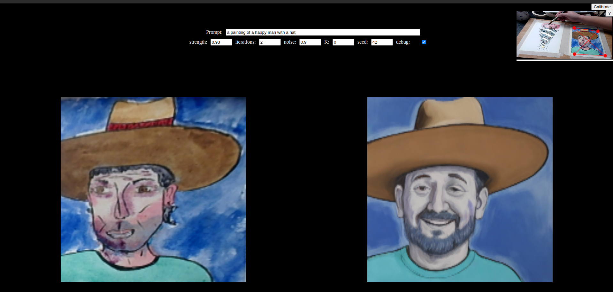 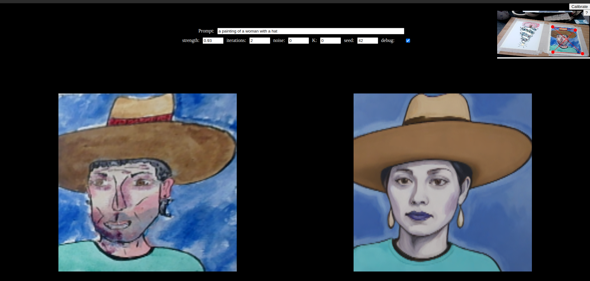 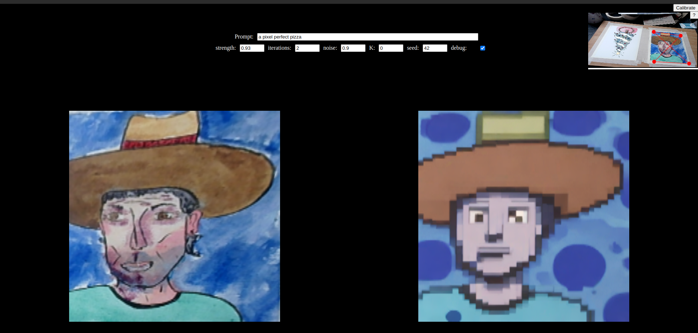 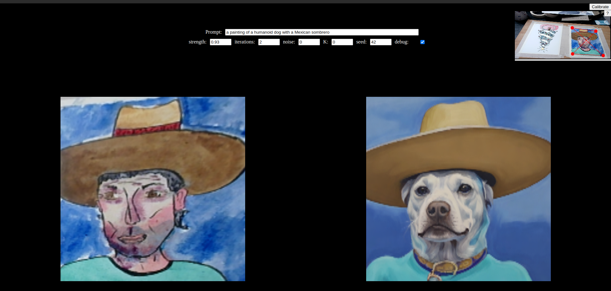 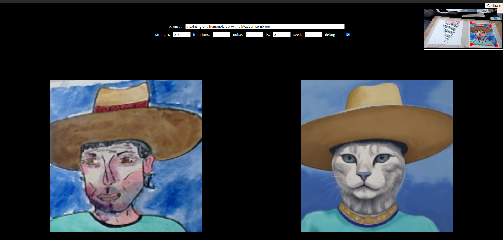
[fig:sdxlpainting]
The AI Totem platform ties these components together into a cohesive system that runs efficiently, even on resource-constrained devices. To ensure smooth performance, the platform separates the processing of different tasks across multiple threads and systems:
[fig:diagtotem]
1. Image Generation via Remote Endpoint: Since SDXL Turbo is a memory-intensive model, it is hosted remotely and accessed via an API. When a user submits a sketch, the platform sends the drawing to the remote endpoint, where SDXL Turbo quickly processes it and returns a high-quality image. This offloading approach allows the platform to maintain fast image generation without burdening the local device, ensuring smooth user experiences.
[fig:imgenapp]
2. Deepfake Animation in Real-Time: The deepfake animation, powered by the First Order Motion model, runs directly on the device. This is possible due to the model’s relatively low computational requirements, which make it feasible to process the user’s interactions and animate the AI-generated characters in real time. GOSAI handles the interaction between the user’s actions (such as head movements or gestures) and the animated characters, ensuring a seamless AR experience.
[fig:deepfakeapp]
By distributing the workload in this way, the AI Totem platform achieves a balance between real-time interaction and high-quality image generation, creating a fluid experience for users. GOSAI manages the integration of these elements, allowing the system to run efficiently across different devices while maintaining a high level of interactivity and detail.
The AI Totem platform represents a convergence of Artificial Intelligence (AI) and Augmented Reality (AR), leveraging technologies like the SDXL Turbo diffusion model and the First Order Motion model. This fusion transforms simple sketches into dynamic, animated creations, immersing users in an interactive AR environment powered by the GOSAI framework.
From a technical standpoint, the platform achieves a seamless integration of AI-driven generation and real-time AR interaction. The implementation challenges—such as maintaining high image quality with fast response times—are addressed through strategic use of remote endpoints for image generation and local processing for animations. This allows users to experience a fluid and responsive environment where creativity is enhanced by technology.
However, the platform’s success is not solely due to its technical efficiency. Its true value lies in how it redefines the relationship between creators and their digital art. By automating traditionally labor-intensive processes like detailed image generation and animation, AI Totem democratizes access to complex creative tools, lowering the barrier for users with limited technical expertise.
The AI Totem platform opens up several intriguing discussions in the field of Human-Computer Interaction (HCI). First, it raises questions about the role of AI in creative processes. While AI augments creativity by simplifying complex tasks, does it diminish the role of human intuition in artistic expression? This balance between human creativity and machine assistance will continue to evolve as AI tools become more sophisticated and accessible.
Another critical discussion surrounds the use of AR as a medium for digital art. AR offers a unique canvas where digital creations interact with the physical world. The immersive and interactive capabilities of AR, when combined with AI, challenge traditional forms of storytelling and artistic engagement. Yet, the success of such platforms relies on their usability—whether the system can offer powerful creative tools without overwhelming the user. In this sense, AI Totem addresses this by abstracting much of the complexity through automation, but further research into improving user interfaces and experience could lead to even more intuitive systems.
Lastly, the platform also highlights the importance of performance optimization in real-time applications. The comparison between frameworks like PyTorch, TorchScript, and ONNX demonstrated that even small improvements in latency or resource management can significantly impact user experience, particularly in mobile or resource-constrained environments. This balancing act between quality, speed, and resource efficiency will be critical for future developments.
The AI Totem platform successfully bridges the gap between AI and AR, offering an accessible and immersive way to engage with digital art. It highlights the potential of AI-driven tools to transform creative processes, making complex tasks more manageable while allowing users to focus on their artistic expression. Moreover, by blending these technologies in real-time, the platform opens up new avenues for interactive storytelling and dynamic user experiences.
As the boundaries between AI, AR, and HCI continue to blur, projects like AI Totem pave the way for a future where digital creativity is no longer limited by technical constraints. This project demonstrates that when integrated effectively, AI and AR can elevate both the creative process and the user experience, making it an essential tool in the evolving landscape of digital art and HCI.
[fig:spiritofWB]
The intersection of Human-Computer Interaction (HCI) and artificial intelligence has seen significant transformations with the advent of large language models (LLMs) acting as semantic operators. These models bridge the gap between human intent and machine action, allowing users to interact with systems through high-level commands. This paradigm enables more abstract, fluid interaction—users no longer need to micromanage interfaces but can instead provide overarching directives that the AI interprets and translates into executable code. However, an equally important element in modern HCI design is the spatial aspect of collaboration, as seen in Spatial Pixel’s work. This combination of semantic understanding and spatial interaction is reshaping how we think about digital experiences.
Traditional digital interfaces, largely confined to flat screens, often limit the user’s ability to engage with systems in meaningful ways. This issue, sometimes referred to as "flat screen, flat thoughts," (Whitney 2024) highlights how modern interfaces—designed around two-dimensional layouts—can stifle creativity and limit interaction. Violet Whitney and William Martin, through their work at Spatial Pixel, advocate for a more spatial approach to interface design. They argue that human cognition is inherently spatial and embodied; our thoughts, behaviors, and problem-solving processes are deeply influenced by how we organize our physical environments. In contrast to traditional screen-based systems, spatial interfaces allow users to leverage their embodied cognition, enhancing the possibilities for creative expression and complex problem solving.
SpatialPixel’s work illustrates how knowledge work, much like manual labor, is inherently spatial. Tools like Miro and Mural brought attention to this by allowing users to zoom out and organize tasks spatially on a canvas, mimicking how we naturally organize our workspaces in the physical world. This concept of spatial cognition—the idea that we think through the space around us—provides an essential framework for the development of more immersive, AI-enhanced digital experiences.
 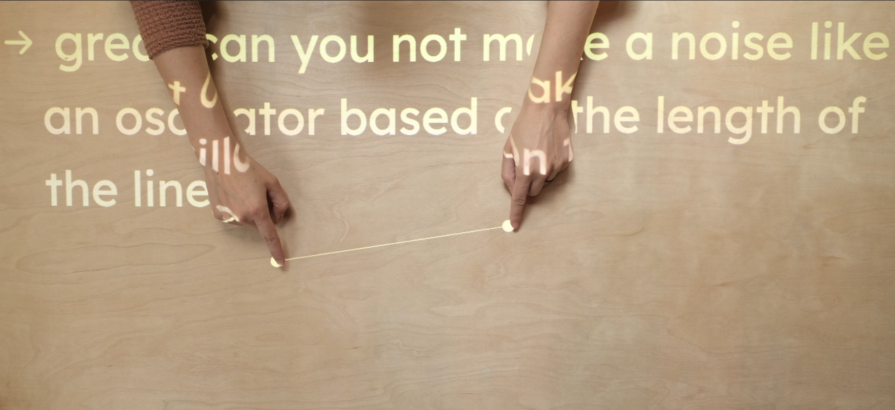 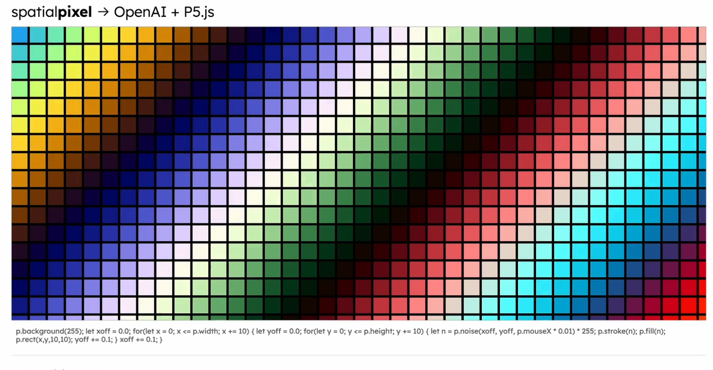
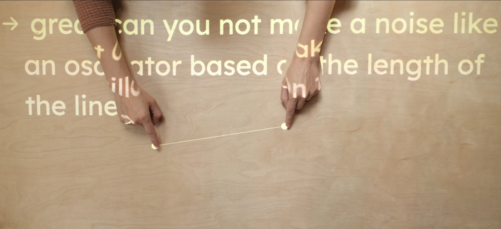 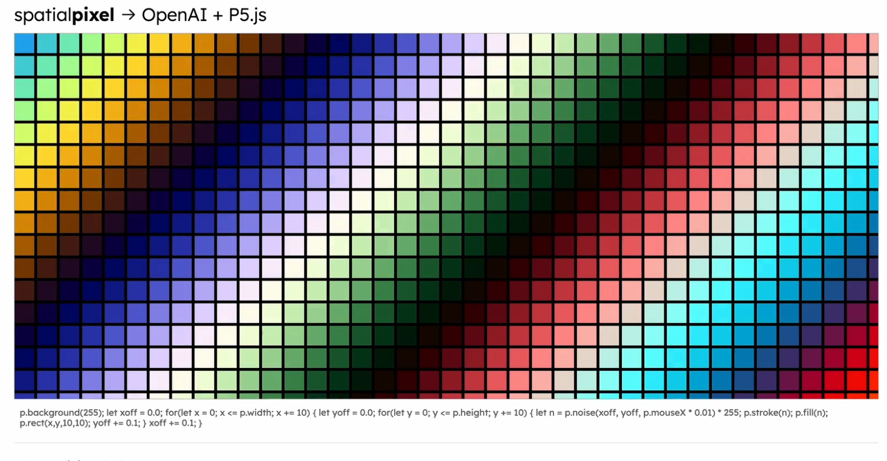
[fig:spatialpixel]
The LLM Whiteboard project builds on these principles by combining the semantic power of LLMs with spatial interaction. Users can issue commands to the LLM, which generates dynamic graphical elements within a p5.js environment. This interaction becomes even more powerful when combined with spatial technologies, as demonstrated by the AR mode, where users can manipulate digital entities in real-world environments using Mediapipe. Here, the spatial relationships between entities are not only visual but embodied, allowing users to interact with the system in ways that align with their natural cognitive processes.
For example, in the AR mode of the LLM Whiteboard, a user can point to a location within their physical environment, and the LLM, using Mediapipe, generates a corresponding digital entity in real-time. This interaction mimics how we naturally manipulate physical objects, further aligning the interface with the user’s cognitive expectations. By introducing spatiality into the interaction, the system enables a more intuitive and expansive form of collaboration, where both the LLM and the user co-create in a shared physical-digital space.
By incorporating both semantic and spatial affordances, the LLM Whiteboard project creates a novel paradigm for collaborative digital interaction. LLMs, as semantic operators, can handle high-level directives, translating abstract user inputs into specific actions. At the same time, spatial technologies like Mediapipe allow for embodied interactions, grounding those digital actions in physical space. This dual approach enables what can be described as low-signaling, high-possibility affordances—the system requires minimal input from the user to generate complex and meaningful outputs, while also allowing for expansive, freeform interactions that align with natural human cognition.
The integration of spatial computing further extends the collaborative possibilities by allowing users to offload cognitive tasks into the environment. This aligns with the Extended Mind Theory, which suggests that cognitive processes are not confined to the brain but are distributed across the body and environment through the use of external tools. LLMs, in this sense, serve as epistemic artifacts, tools that extend our ability to process information, while spatial interaction provides the physical grounding needed for effective problem-solving and creativity.
Large language models (LLMs) are increasingly acting as semantic operators—intelligent systems that bridge the gap between human intent and machine execution. In this role, LLMs interpret high-level commands and autonomously generate corresponding actions, offering new possibilities for user interaction. This shift from explicit command-based interactions to abstract, semantic-level collaboration represents a significant evolution in HCI, reducing the cognitive load on users while expanding their creative capabilities.
This section introduces key technologies, like Langchain (Chase 2022) , that support the operation of LLMs as semantic operators, and integrates a discussion of current advancements in AI-driven autonomy, exemplified by AutoGPT (Gravitas 2024) , BabyAGI (Nakajima 2024) , and Microsoft Research’s “Sparks of Artificial General Intelligence” paper (Bubeck et al. 2023) . These developments collectively shape the way we understand how LLMs operate in complex digital systems, scaling their semantic capabilities and pushing toward broader, autonomous applications.
At the core of the LLM Whiteboard project is the concept of LLMs functioning as semantic operators. Rather than requiring explicit, low-level programming input, these models enable users to interact at a higher, more abstract level. By processing human commands in natural language, LLMs act as intermediaries, translating user intent into executable actions or code. This allows for the exploration of new forms of creative collaboration, where users are empowered to direct processes without the need for technical knowledge.
In this context, the concept of low-signaling, high-possibility affordances becomes central. With minimal input from users—such as a simple command to "create a moving circle"—the LLM can generate complex, dynamic systems within a live coding environment. Using technologies like p5.js for graphics and Langchain for tool orchestration, these models can handle complex digital tasks, manage the execution of various functions, and even self-correct through feedback loops.
As LLMs become more powerful, they evolve from standalone operators into distributed systems of LLM agents. Each agent can specialize in different aspects of the task, collaborating with others to achieve higher complexity and scalability. This concept of a sea of LLM agents, orchestrated through frameworks like Langchain, opens up vast possibilities for building autonomous systems that can perform tasks traditionally associated with human intelligence.
In the LLM Whiteboard project, this could involve multiple agents working in parallel—some handling the generation of graphical entities, others managing the interaction with external APIs, and yet another agent responsible for debugging and iterating on user feedback. By decentralizing the task management process, the system becomes more flexible, scalable, and capable of handling complex workflows.
The emergence of autonomous multi-agent systems is emblematic of a broader trend in AI, as demonstrated by recent innovations like AutoGPT and BabyAGI.
The development of AutoGPT and BabyAGI offers a glimpse into how LLMs are being used as autonomous agents capable of handling complex tasks with minimal user input. These systems represent the next step in scaling the semantic capabilities of LLMs, turning them into self-governing entities capable of multi-step reasoning, task decomposition, and even learning from experience.
AutoGPT demonstrates how LLMs can autonomously manage and complete tasks by breaking down high-level goals into subtasks and iterating over them without constant human guidance. In a system like AutoGPT, LLMs go beyond responding to user prompts—they actively take on goals, strategize solutions, and execute actions autonomously. This aligns with the goals of the LLM Whiteboard project, which seeks to minimize user input while maximizing creative output, allowing users to provide abstract commands that the model turns into executable code.
BabyAGI takes a learning-oriented approach to autonomy, focusing on task-oriented learning and recursive improvement. This system simulates early stages of Artificial General Intelligence (AGI) by using feedback loops to iteratively improve its performance on tasks. For the LLM Whiteboard, integrating BabyAGI-like capabilities would mean the system could learn from user interactions, refining its output based on real-time feedback. This would enhance the model’s ability to act as a creative partner, adapting to user preferences and improving its code generation over time.
Sparks of AGI, the paper published by Microsoft Research, explores the theoretical underpinnings of AGI, suggesting that LLMs are beginning to show early signs of general intelligence. This research underlines the importance of multi-step reasoning and adaptability, features that are increasingly becoming part of systems like AutoGPT and BabyAGI. The paper’s insights reinforce the potential for LLMs to act as powerful semantic operators capable of handling complex, open-ended tasks that go beyond narrow use cases.
The advances demonstrated by AutoGPT, BabyAGI, and the “Sparks of AGI” paper directly influence the trajectory of the LLM Whiteboard project. As we integrate these cutting-edge concepts, we move toward a future where LLMs can serve as true creative collaborators, autonomously managing the complex digital experiences envisioned by users. The incorporation of Langchain and the potential for multi-agent architectures allows the LLM Whiteboard to handle increasingly sophisticated design tasks with minimal intervention, reflecting the principles of low-signaling, high-possibility affordances in HCI.
By leveraging the operational power of autonomous agents, the LLM Whiteboard can expand its capabilities to include task learning, multi-agent collaboration, and iterative improvement. This positions the project not just as a creative tool, but as a model for future systems that blend user-driven interaction with AI-driven autonomy, unlocking new possibilities for large-scale, adaptive digital experiences.
By incorporating the latest advances in AI-driven autonomy and task execution, the project demonstrates the profound potential of LLMs to act as powerful semantic operators—agents capable of transforming abstract user inputs into dynamic, creative outputs at scale.
The technical framework of the LLM Whiteboard revolves around two core technologies: Langchain and p5.js.
The technological backbone that empowers LLMs to operate as semantic agents within the LLM Whiteboard project is Langchain. Acting both as a framework and an operational paradigm, Langchain orchestrates complex workflows by integrating LLMs with external tools and APIs, transforming them into tool-driven operators. This allows the LLM to intelligently select the most appropriate resources for each task, making it more autonomous and responsive to user input.
In the LLM Whiteboard, Langchain enables the model to dynamically access and manipulate graphical entities in p5.js while simultaneously handling error correction and iteration. For example, when the LLM is asked to "create a bouncing ball," it generates the required code in p5.js, while managing the visual attributes and behaviors of the entity in real time. This seamless interaction between user commands and the model’s code generation capabilities is made possible by Langchain’s orchestration logic.
[fig:langchainlogic]
Langchain’s architecture supports zero-shot prompting, allowing the model to generate new entities and functions on the fly by accessing predefined tools and APIs. Furthermore, Langchain enables a robust fallback mechanism that empowers the model to correct and iterate on its code autonomously. Beyond its specific application in the LLM Whiteboard, Langchain lays the groundwork for scaling LLM-based systems into more sophisticated autonomous agents, capable of handling complex, multi-domain tasks.
p5.js is an open-source JavaScript library created by Lauren McCarthy in 2014, inspired by the Processing language developed by Casey Reas and Ben Fry. Its main goal is to simplify coding through an accessible and playful approach, using gamification to make programming more engaging. By offering real-time visual feedback, p5.js encourages experimentation, making coding less intimidating, especially for beginners.
More than just a learning tool, p5.js enables a new art form that integrates visuals, audio, and interaction. It allows artists to create dynamic, generative works that respond to user inputs, blending technology and creativity in ways that redefine digital art. p5.js supports a global creative community, fostering inclusivity and accessibility in creative coding while expanding the possibilities for interactive art and multimedia experiences.
p5.js provides the graphical environment where the LLM Whiteboard brings user commands to life. The LLM uses this library to instantiate and manipulate entities like circles, rectangles, or more complex forms, linking abstract user inputs to visual outputs. p5.js’s ability to handle real-time animations and dynamic user interactions makes it an ideal platform for this form of AI-assisted creation. Additionally, the LLM can extend p5.js’s core functionality by writing custom functions that augment the library’s capabilities, further expanding the creative space available to the user.
[fig:wbarchietcure]
The LLM White Board offers multiple modalities of interaction, enhancing the user’s ability to engage with both the creative and technical aspects of the system. Commands can be sent via keyboard or voice, allowing users to express their high-level ideas in a flexible manner. Interaction with the generated creations is facilitated through either the mouse or Mediapipe, enabling intuitive control over digital entities. Additionally, a drop-down menu provides access to the code associated with the entities and functions created by the LLM, offering users a deeper understanding of the system’s underlying processes and actions.
Together, these technologies form the foundation of a system that combines user-driven creativity with the autonomous problem-solving abilities of LLMs. The LLM Whiteboard thus stands as a demonstration of how AI can enable new forms of interaction in HCI, allowing users to explore high-possibility, low-signaling affordances that lower the barrier to creative expression while expanding the range of what can be accomplished with minimal input.
1. In White Board mode: the canvas starts as a blank space, and the collaboration between the user and the LLM is visually displayed on top of the canvas. This mode emphasizes a dynamic, fluid interaction, where the LLM generates code in real time based on high-level instructions from the user. Whether via text or voice input, the user can issue commands such as "create a circle" or "generate a wave pattern," and the LLM translates these into the corresponding p5.js code.
The affordance here lies in the way the system abstracts the technical complexity behind coding. Rather than requiring the user to understand the intricate syntax of JavaScript or p5.js, the system transforms abstract ideas into executable functions. This not only accelerates the creative process but also lowers the barrier for non-technical users to engage in coding-based design. The error correction mechanism, enabled by Langchain, further enhances the experience by providing immediate feedback and iterating over solutions when errors arise, ensuring smooth and uninterrupted interaction.
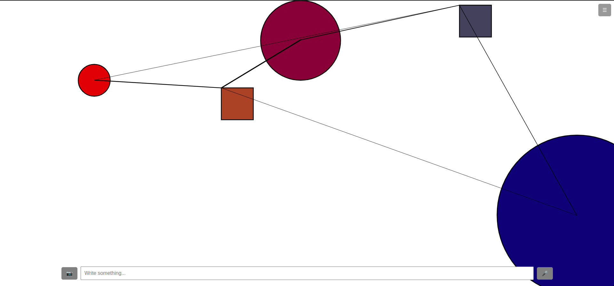 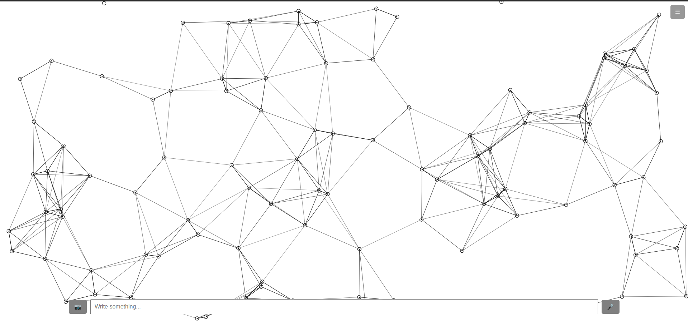 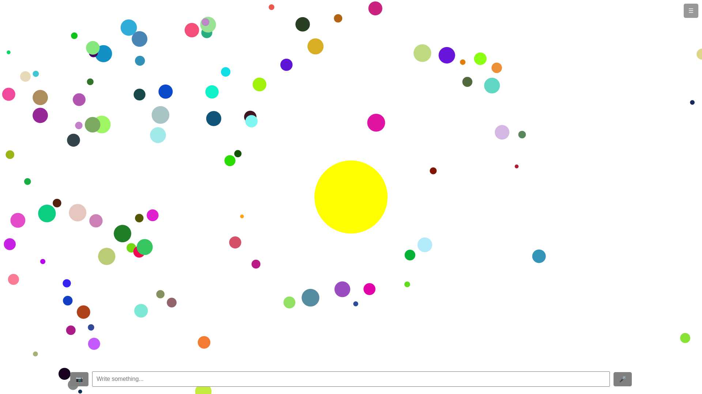
[fig:wbdemo1]
2. AR mode: The second mode extends the interaction possibilities by introducing the physical world into the equation. In this mode, the user’s webcam feed is overlaid onto the canvas, creating a mixed-reality environment where both digital and physical elements coexist. Through the integration of Mediapipe, the LLM is able to track the user’s body, hands, and face, allowing it to create entities and functions that respond to the user’s movements.
For example, the LLM can be prompted to generate functions that change the color of an object based on hand gestures or move an entity in response to body position. This interactivity adds a new layer of immersion and control, as the user’s physical presence becomes an integral part of the digital creation process. The affordances in this mode are defined by the system’s ability to bridge the gap between digital interaction and physical movement, creating a seamless blend of AR and AI-driven functionality.
The use of AR in combination with AI allows for high-level creative experimentation that would traditionally require intricate knowledge of both computer vision and real-time interaction systems. Here again, the system simplifies the complex technical aspects, such as mediating between body tracking inputs and code execution, into a set of high-level commands that the LLM can interpret and act upon. This transforms the experience into one where the user’s natural gestures and movements become creative tools, opening up a wide range of possibilities for interactive digital experiences.
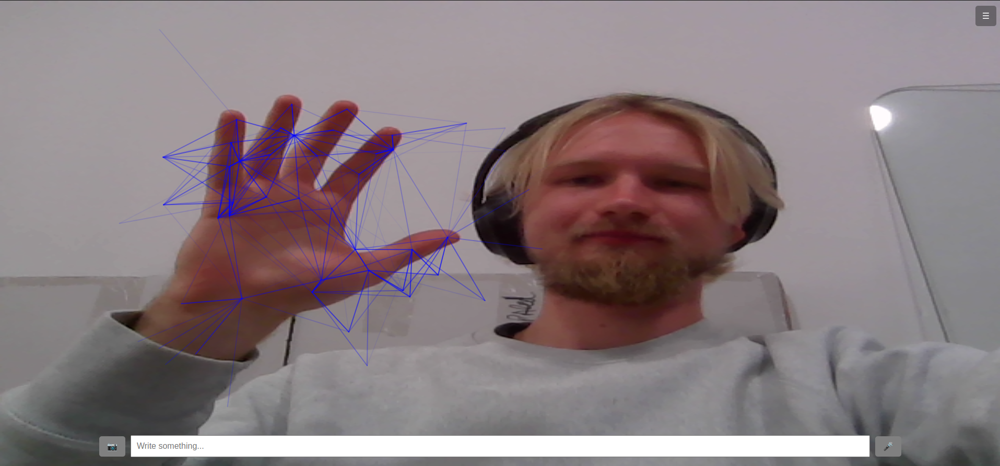 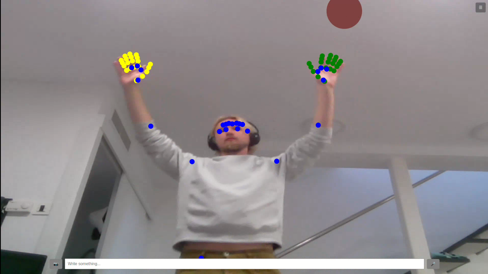 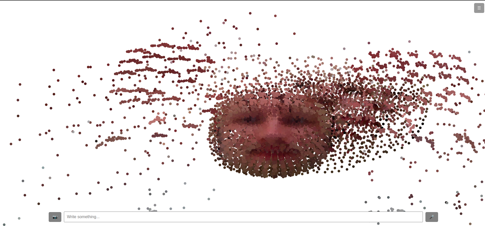
[fig:wbdemo1]
The LLM Whiteboard project demonstrates how the integration of LLMs and spatial interaction technologies can redefine the creative process within Human-Computer Interaction. By leveraging LLMs as semantic operators, the platform transforms high-level user commands into executable code in a live coding environment. This allows users to interact with digital creations more intuitively, minimizing the technical complexity typically involved in coding-based systems.
The system’s dual modalities—White Board and AR—offer two distinct forms of interaction. In White Board mode, users can issue commands that generate dynamic entities and functions in p5.js, all within a visual, real-time canvas. Meanwhile, in AR mode, the physical environment is incorporated, allowing users to interact with digital objects through natural movements and gestures, tracked via Mediapipe.
At its core, the LLM Whiteboard reduces the barrier for entry into digital creation, making it more accessible to non-technical users while also enabling rapid prototyping and collaboration. By fusing the abstract capabilities of LLMs with spatial computing, the platform opens up new avenues for interactive digital experiences.
The LLM Whiteboard project sparks discussions regarding the evolving role of AI in creative processes and HCI. First, it highlights the potential for LLMs to act as creative collaborators rather than mere tools. By interpreting high-level inputs and generating complex outputs autonomously, these models take on more creative responsibility, prompting the question: how much of the creative process can or should be handed over to AI?
Another crucial discussion point is the merging of spatial and semantic interfaces. As the platform demonstrates, spatial interactions—enabled by AR and body tracking—provide a more natural and embodied way for users to engage with digital content. This aligns with cognitive theories, such as the Extended Mind Theory, which suggest that cognition is distributed between the brain, body, and environment. The LLM Whiteboard’s ability to extend digital creation into physical space offers a glimpse into how future systems might further integrate human cognition with AI-driven environments.
The system also raises questions about accessibility. By abstracting away the complexities of coding, it makes creative coding environments more inclusive, allowing a wider range of users to explore digital design without needing in-depth technical knowledge. This democratization of tools is a key trend in modern HCI and has significant implications for the future of creative technology.
The LLM Whiteboard project stands at the intersection of AI and spatial computing, offering a powerful glimpse into the future of creative collaboration in HCI. By using LLMs to handle the semantic layer and spatial technologies to enable natural interaction, the platform makes digital creation more intuitive, accessible, and engaging. The two modes—White Board and AR—offer flexible pathways for users to explore their creative ideas, whether through abstract commands or physical gestures.
In doing so, the LLM Whiteboard not only reduces the technical barriers to digital creativity but also expands the possibilities for interaction. It bridges the gap between human intent and machine execution, showcasing how AI can become a true creative partner in the digital realm. The project sets a foundation for future innovations where LLMs and spatial intelligence combine to create even more immersive, adaptive, and user-driven digital experiences.
The exploration of affordances in human-computer interaction (HCI) through the lens of artificial intelligence (AI) has revealed a paradigm shift in how interfaces are designed and how users interact with them. Traditionally, affordances were driven by explicit visual or tactile cues that guided users to perform specific actions. However, with the integration of AI, a new interaction model emerges—one that prioritizes low-signaling, high-possibility affordances, allowing for a more dynamic, adaptive, and user-centric experience.
Through this thesis, we have investigated the evolving role of AI in HCI, particularly how AI-driven affordances transcend explicit cues, enabling seamless and intuitive interactions. The Totem Project and LLM Whiteboard exemplify the core ideas of this research, demonstrating how AI can be employed to reduce the complexity of user input while enhancing the possibilities for interaction. Both projects showcase how AI enables interfaces to predict, infer, and respond to user behavior in ways that are context-aware and responsive to creative expression.
The central research question of how AI-driven affordances differ from traditional affordances has been answered through the study of AI’s ability to infer intent with minimal explicit guidance. Unlike traditional affordances, which rely on clear, fixed signals to indicate possible actions, AI-driven affordances adapt based on real-time user interactions, creating a more flexible and intuitive user experience. For example, in the Totem Project, AI interprets user gestures and transforms basic sketches into interactive, dynamic art with minimal input. This demonstrates that AI-driven affordances expand the creative possibilities within an interface, fostering more fluid and expressive user interactions.
The research has also shown how AI-driven affordances can enhance user interaction by offering a greater range of possibilities with less cognitive effort from the user. The LLM Whiteboard project highlights how large language models (LLMs) act as semantic operators, allowing users to give high-level commands and generate complex outputs with ease. This reflects how AI-driven systems enable low-signaling, high-possibility interactions, where users are empowered to engage with interfaces on an abstract level without needing to manage every detail.
However, challenges associated with designing for low-signaling, high-possibility affordances were also identified. One of the primary concerns is that users may struggle to understand the full scope of available actions if the signaling is too minimal. This challenge was explored in both projects, where balancing user guidance and freedom became crucial. For instance, in augmented reality (AR) environments like AI Totem, the risk of overwhelming users with possibilities without clear affordances was addressed by embedding adaptive AI cues that only surface when needed.
This thesis contributes to the growing body of knowledge on how AI can enrich HCI by fostering more intuitive, autonomous, and creative interactions. It builds on the idea that AI is not just a tool for enhancing interfaces but a central component of how interfaces are designed, moving beyond traditional affordance models toward more adaptive, predictive, and dynamic systems.
The Totem Project showcases how AI and AR can work in synergy to transform creative processes, turning user sketches into real-time, animated art. This project serves as a model for how creative expression in digital environments can be enhanced through AI-assisted affordances that minimize technical barriers while maximizing artistic potential.
Similarly, the LLM Whiteboard provides a glimpse into the future of collaborative AI in HCI, where users and AI systems can work together to create complex outputs through high-level commands. The project illustrates the potential of LLMs to act as intelligent collaborators, further extending the possibilities of low-signaling, high-possibility interfaces in both creative and technical domains.
The findings of this thesis have significant implications for the design of future HCI systems. As AI continues to evolve, we can expect more interfaces to adopt the low-signaling, high-possibility paradigm, offering users a more seamless and engaging experience. This shift toward AI-driven interaction models opens new possibilities for personalized, adaptive systems that cater to individual user needs while supporting a wide range of applications—from digital art and design to real-time collaboration in technical environments.
Ultimately, the research presented in this thesis advocates for a rethinking of affordance design in light of AI’s capabilities. By leveraging AI to balance signaling and possibility, designers and engineers can create more natural, fluid, and interactive experiences, aligning with the growing expectations of intuitive, AI-augmented systems in the modern world.
In conclusion, AI has emerged as a transformative force in HCI, enabling new forms of interaction that were previously unimaginable. Through the lens of affordances, we have seen how AI can bridge the gap between user intention and system response, making interfaces more adaptive, dynamic, and creatively empowering. As this field continues to evolve, the principles explored in this thesis will serve as foundational concepts for the next generation of AI-enhanced user experiences.
Bazarevsky, V. 2020. “BlazePose: On-Device Real-Time Body Pose Tracking.” arXiv Preprint arXiv:2006.10204.
Beltrão, Gabriela, Iuliia Paramonova, and Sonia Sousa. 2022. “User Interface Design for Ai-Based Clinical Decision-Support System : Preliminary Study.” In 2022 17th Iberian Conference on Information Systems and Technologies (Cisti), 1–4. https://doi.org/10.23919/CISTI54924.2022.9820378.
Bubeck, Sébastien, Varun Chandrasekaran, Ronen Eldan, Johannes Gehrke, Eric Horvitz, Ece Kamar, Peter Lee, et al. 2023. “Sparks of Artificial General Intelligence: Early Experiments with Gpt-4.” arXiv Preprint arXiv:2303.12712.
Cao, Zhe, Tomas Simon, Shih-En Wei, and Yaser Sheikh. 2017. “Realtime Multi-Person 2d Pose Estimation Using Part Affinity Fields.” In Proceedings of the Ieee Conference on Computer Vision and Pattern Recognition, 7291–9.
Chase, Harrison. 2022. “LangChain.” https://github.com/langchain-ai/langchain.
Cisek, Paul, and John F Kalaska. 2010. “Neural Mechanisms for Interacting with a World Full of Action Choices.” Annual Review of Neuroscience 33 (1): 269–98.
Devlin, Jacob. 2018. “Bert: Pre-Training of Deep Bidirectional Transformers for Language Understanding.” arXiv Preprint arXiv:1810.04805.
Fragoso, S., R. R. Rebs, and D. L. Barth. 2012. “Interface Affordances and Social Practices in Online Communication Systems.” Proceedings of the International Working Conference on Advanced Visual Interfaces. https://doi.org/10.1145/2254556.2254569.
Gibson, James J. 1977. “The Theory of Affordances.” Hilldale, USA 1 (2): 67–82.
Gravitas, Significant. 2024. “AutoGPT.” https://github.com/Significant-Gravitas/AutoGPT.
Hochreiter, S. 1997. “Long Short-Term Memory.” Neural Computation MIT-Press.
Lugaresi, Camillo, Jiuqiang Tang, Hadon Nash, Chris McClanahan, Esha Uboweja, Michael Hays, Fan Zhang, et al. 2019. “Mediapipe: A Framework for Building Perception Pipelines.” arXiv Preprint arXiv:1906.08172.
Markov, A. A. 1913. “Essai d’une Recherche Statistique Sur Le Texte Du Roman ‘Eugene Onegin’ Illustrant La Liaison Des Epreuve En Chain (‘Example of a Statistical Investigation of the Text of “Eugene Onegin" Illustrating the Dependence Between Samples in Chain’).” Izvistia Imperatorskoi Akademii Nauk Bulletin de l’Académie Impériale Des Sciences de St.-Pétersbourg, 6th ser., 7: 153–62.
McGrenere, J., and W. Ho. 2000. “Affordances: Clarifying and Evolving a Concept.” Proceedings of Graphics Interface 2000 Montréal: 179–86. https://doi.org/10.20380/gi2000.24.
Nakajima, Yohei. 2024. “BabyAGI.” https://github.com/yoheinakajima/babyagi.
Neches, Robert, John Seely Brown, Norm Sondheimer, Tom Malone, and Mike Williams. 1986. “Intelligence in Interfaces (Panel).” In Proceedings of the Sigchi/Gi Conference on Human Factors in Computing Systems and Graphics Interface, 267–69.
Norman, Donald A. 1988. “The Psychology of Everyday Things.” Basic books.
Pennington, Jeffrey, Richard Socher, and Christopher D Manning. 2014. “Glove: Global Vectors for Word Representation.” In Proceedings of the 2014 Conference on Empirical Methods in Natural Language Processing (Emnlp), 1532–43.
Przepiorka, W., and C. Horne. 2018. “How Can Consumer Trust in Energy Utilities Be Increased? The Effectiveness of Prosocial, Proenvironmental, and Service-Oriented Investments as Signals of Trustworthiness.” Organization &Amp; Environment 33 (2): 262–84. https://doi.org/10.1177/1086026618803729.
R, P., K. Sanjaya, S. Rathika, A. Hussein Alawadi, K. Makhzuna, S. Venkatesh, and B. Rajalakshmi. 2023. “Human-Computer Interaction: Enhancing User Experience in Interactive Systems.” E3S Web of Conferences 399: 04037. https://doi.org/10.1051/e3sconf/202339904037.
Radford, Alec. 2018. “Improving Language Understanding by Generative Pre-Training.”
Rong, Xin. 2014. “Word2vec Parameter Learning Explained.”
Rumelhart, David E., Geoffrey E. Hinton, and Ronald J. Williams. 1986. “Learning Internal Representations by Error Propagation.” In. https://api.semanticscholar.org/CorpusID:62245742.
Sauer, Axel, Dominik Lorenz, Andreas Blattmann, and Robin Rombach. 2023. “Adversarial Diffusion Distillation.” arXiv Preprint arXiv:2311.17042.
Siarohin, Aliaksandr, Stéphane Lathuilière, Sergey Tulyakov, Elisa Ricci, and Nicu Sebe. 2019. “First Order Motion Model for Image Animation.” In Conference on Neural Information Processing Systems (Neurips).
Thomas Juldo, GOSAI-DVIC. 2022. “GOSAI: General-Purpose Operating System for Augmented Interfaces.” https://github.com/GOSAI-DVIC/gosai.
Vaswani, A. 2017. “Attention Is All You Need.” Advances in Neural Information Processing Systems.
Whitney, Violet. 2024. “Flat Screen. Flat Thoughts: User Interface Bureaucracy and How a Philosophy from 1900s Capitalism Could Save Us.” https://medium.com/spatial-pixel/flat-screen-flat-thoughts-364.